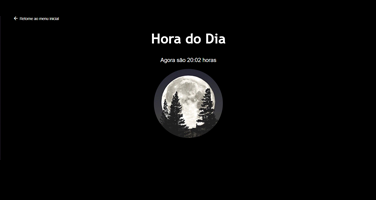

Um pouquinho da minha história...
Olá! Meu nome é Mariana, mas pode me chamar de Mari. Sou formada em Publicidade e Propaganda e estou em transição de carreira para a área tech. Sempre me considerei uma pessoa com uma maior tendência para a área de humanas, por isso adiei por diversas vezes começar meus estudos em TI. Em 2020, em meio a pandemia de Covid-19, comecei, despretenciosamente, um curso on-line sobre a ciência da computação dado pela Universidade de Harvard. Após a conclusão do curso estava determinada a começar um novo curso universitário. Assim me tornei aluna da Instituição Senac, onde curso atualmente Sistemas para Internet. No presente, trabalho como estagiária na área de Business Agility na Ambev Tech, o hub de tecnologia da maior cervejaria do mundo. Na Cia trabalho para garantir a eficiência dos projetos utilizando metodologia ágil. Paralelo a isso gosto de estudar programação. Meu atual campo de estudos é focado em Desenvolvimento Front-End. Possuo algum conhecimento sobre HTML, CSS, JavaScript, UX, Python, C, Java e SQL.
Portifólio
Aplicativo web onde o usuário adiciona
quantos números desejar e o programa
retorna a quantidade de números, o maior
número, o menor número, a soma de todos
os números e a média dos valores. Finance
Aplicativo web onde é possível gerencial
portifólio de ações da Bolsa de Valores Verificador de Idade
Aplicativo web onde o usuário define o
ano de nascimento e o gênero de uma
pessoa. O programa exibe uma foto e uma
mensagem dizendo qual o gênero e a idade. Gasolina ou álcool?
Código de um programa desenvolvido em
JavaScript que define se é mais vantajoso
abastecer com álcool ou gasolina baseado no
preço.  Hora do Dia
Aplicativo web em que a imagem e a cor de
fundo da página mudam de acordo com o
período do dia. Trabalhando com Vetor
Código de um programa desenvolvido em
Java que calcula e retorna o valor da maior
diferença entre dois elementos distintos de
um vetor e verifica se o vetor está em order
crescente.